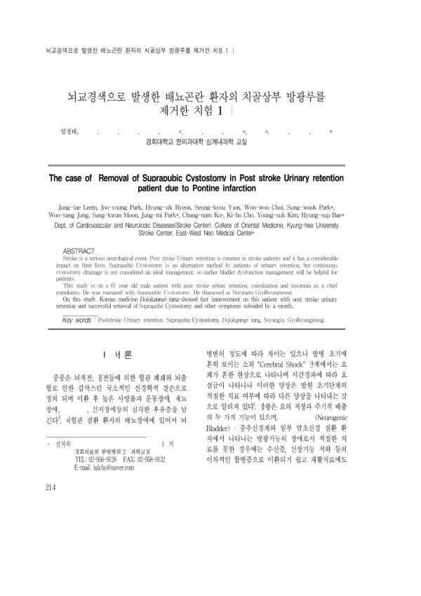

뇌교경색으로 발생한 배뇨곤란 환자의 치골상부 방광루를 제거한 치험 1례
Leem Jt, Park Jy, Byeon Hs, Yoon Sk, Choi Ww, Park Sw, Jung Ws, Moon Sk, Park Jm, Ko Cn, Cho Kh, Kim Ys, Bae Hs
The Journal of Internal Korean Medicine 214-221

첫 장 · 오픈액세스First page · open access
논문 소개Summary
뇌졸중 뒤에 소변을 스스로 보지 못하는 일은 드물지 않지만, 요실금에 견주어 요폐를 다룬 연구는 훨씬 적습니다. 한의계 논문도 기전이 다른 둘을 「배뇨장애」로 뭉뚱그려 적어 온 편입니다. 치골상부 방광루는 요도 도뇨관보다 요로손상이 적어 쓰이지만, 오래 넣어 두면 요로감염과 방광결석, 신부전 같은 합병증이 따라옵니다. 그래서 가능한 한 빨리 자가배뇨로 돌려놓는 것이 유리한데, 정작 넣어 둔 방광루를 뽑아낸 기록은 보고된 적이 없었습니다.
2008년 2월 양측 뇌교경색으로 감금증후군에 빠진 61세 남성의 기록입니다. 다른 병원에서 치골상부 방광루와 위루관, 기관절개술을 받고 석 달 넘게 지낸 뒤 2008년 5월 31일 경희의료원 한방병원에 입원했습니다. 입원 당시 요의가 없어 자가배뇨가 되지 않았고, 방광루를 오래 유치한 탓에 소변이 탁하고 뇨배양에서 녹농균이 자랐습니다. 마비성 장폐색으로 사나흘에 한 번 관장을 해야 대변을 보았으며 불면이 심해 수면제를 쓰고 있었습니다.
체형과 성격, 소증을 보아 소양인 결흉증으로 진단하고 양격산화탕에 이어 도적강기탕을 투여했으며, 뒤에 청상보하탕과 자음건비탕으로 바꾸었습니다. 저자들은 배뇨 문제를 푼 처방으로 도적강기탕을 꼽았습니다. 침과 뜸, 전침을 함께 놓았습니다. 6월 16일부터 오전 7시에서 오후 10시 사이에 방광루를 잠그고, 자가배뇨가 있으면 곧바로 잔뇨량을 재어 배뇨량과 함께 적었으며, 네 시간이 지나도 배뇨가 없으면 열어 소변을 흘려보낸 뒤 다시 잠갔습니다.
주간 자가배뇨 총량이 잔뇨 총량을 넘어서면서 6월 29일부터 방광루를 잠근 채 두었고 7월 4일에 제거했습니다. 제거한 뒤 한 달 동안 날마다 섭취량과 배설량을 확인했으나 자가배뇨에 문제가 없었습니다. 같은 기간에 관장 없이 대변을 보게 되었고, 수면제를 끊고도 잠을 잤으며, 진토제를 중단한 뒤에도 위장 증상이 다시 오지 않았습니다.
한계도 본문에 그대로 적혀 있습니다. 환자가 말로 뜻을 전하기 어려워 배뇨 증상을 재는 데 널리 쓰이는 국제전립선증상점수를 적용하지 못했고, 그래서 환자가 실제로 느끼는 증상은 평가하지 못했습니다. 한 사람의 기록이므로 방광루를 뺄 수 있었던 것이 치료 덕분이라고 말할 수도 없습니다. 그럼에도 이 글은 뇌졸중 뒤 유치한 치골상부 방광루를 한의 치료 중에 제거한 첫 보고이고, 배뇨량과 잔뇨량을 날마다 적어 제거 시점을 정한 절차를 남겼다는 점에서 읽을 값이 있습니다.
Being unable to pass urine after a stroke is not rare, yet urinary retention has drawn far less study than incontinence. Korean medicine papers have tended to lump the two together as "voiding disturbance", even though they arise by different mechanisms. A suprapubic cystostomy is used because it injures the urethra less than an indwelling catheter and is easier on the patient's quality of life, but left in place it brings urinary infection, bladder stones and renal failure. Returning the patient to spontaneous voiding as early as possible is therefore preferable — and yet no report existed of a cystostomy actually being removed.
The record concerns a 61-year-old man who fell into a locked-in state from bilateral pontine infarction in February 2008. After more than three months elsewhere with a suprapubic cystostomy, a gastrostomy tube and a tracheostomy, he was admitted to the Kyung Hee Medical Center Korean medicine hospital on 31 May 2008. On admission he had no urge to void and could not urinate on his own; the long-standing cystostomy had left his urine turbid, with Pseudomonas aeruginosa on culture. Paralytic ileus meant an enema every three to five days before he could open his bowels, and severe insomnia was being treated with hypnotics.
Taking his build, temperament and background constitution together, he was diagnosed as a Soyangin with a chest-binding pattern and given Yanggyeoksanhwa-tang followed by Dojeokganggi-tang, later changed to Cheongsangboha-tang and Jaeumgeonbi-tang. The authors singled out Dojeokganggi-tang as the prescription that resolved the voiding problem. Acupuncture, moxibustion and electroacupuncture were given alongside. Recovery was confirmed by record rather than impression: from 16 June the cystostomy was clamped between 7 a.m. and 10 p.m., residual volume was measured immediately whenever he voided and written down beside the voided volume, and if four hours passed without voiding the clamp was opened, the urine drained, and the clamp closed again.
Once daytime voided volume exceeded residual volume, the cystostomy was left clamped from 29 June and removed on 4 July. Intake and output were checked daily for a month afterwards, with no trouble in spontaneous voiding. Over the same period he came to move his bowels without enemas, slept without hypnotics, and had no return of gastrointestinal symptoms after the antiemetic was stopped. Inpatient treatment ran from 31 May to 28 July 2008.
The limitations are stated in the text itself. Because the patient could not communicate verbally, the International Prostate Symptom Score, the usual instrument for voiding symptoms, could not be applied, so his own experience of his symptoms went unmeasured. With one patient it is also impossible to say that the cystostomy could be removed because of the treatment. Even so, this is the first report of a post-stroke suprapubic cystostomy being removed in the course of Korean medicine treatment, and it leaves behind a procedure — daily voided and residual volumes deciding when to remove — that others can follow. The authors suggested the same approach might be tried in neurogenic bladder after spinal cord injury and in other patients living with a cystostomy.
인용Cite
Leem Jt, Park Jy, Byeon Hs, Yoon Sk, Choi Ww, Park Sw, Jung Ws, Moon Sk, Park Jm, Ko Cn, Cho Kh, Kim Ys, Bae Hs. 뇌교경색으로 발생한 배뇨곤란 환자의 치골상부 방광루를 제거한 치험 1례. The Journal of Internal Korean Medicine. 2009:214-221.